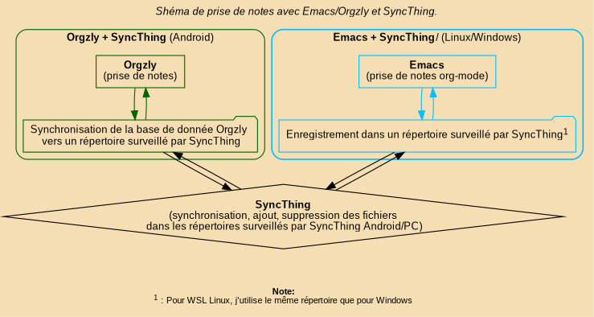

Installation et configuration d’Emacs sous Windows
Table of Contents
1. Présentation
Configuration Emacs pour Windows et Linux et WSL Linux. Fichiers à éditer. #+BEGINEXAMPLE
- %HOME%/.authinfo
- %HOME%/.emacs.d/config/config-emms.el (Clé ivy )
- %HOME%/.emacs.d/config/config-org.el (Agenda org-gcal)
- %HOME%/.emacs.d/config/config-gnus.el (gnus mails, newsgroup)
- %HOME%/.emacs.d/config/config-biome.el (Coordonnées GPS)
#+END_
2. Installer Emacs pour Linux
2.1. Installer emacs selon la distribution.
2.2. Utilisation de Stow.
https://www.gnu.org/software/stow/
cd stow-dotfiles &&
stow emacs
2.3. Configuration Gpg .authinfo
2.4. Fichiers à éditer
3. Installer Emacs pour Windows
https://www.gnu.org/software/emacs/download.html
Vérifier l’installation dans cmd.exe / PowerShell :
emacs --version
Si la commande n’est pas reconnue, ajouter Emacs au PATH :
3.0.1. cmd.exe
setx PATH "%PATH%;C:\Program Files\Emacs\bin"
Redémarrer le terminal ou windows.
3.0.2. powershell
[Environment]::SetEnvironmentVariable("PATH", $env:PATH + ";C:\Program Files\Emacs\bin", [EnvironmentVariableTarget]::User)
Redémarrer le terminal ou windows.
4. Configurer Emacs
4.1. Fichiers et répertoires à copier depuis le dépôt
- emacs.d/early-init.el
- emacs.d/init.el
- emacs.d/elisp/
- emacs.d/config/
- emacs.d/sons/
- emacs.d/images/ (optionnel)
HOME/
├── .authinfo.gpg
├── bin/
├── GNU/
├── .emacs.d/
├── early-init.el
├── init.el
├── config/
├── elisp/
└── sons/
4.2. Configurer la variable HOME pour Windows
Définir HOME vers votre dossier utilisateur (persistant).
4.3. Ajouter %HOME%\\bin au PATH
Créer le dossier :
mkdir %HOME%\bin
- cmd.exe
setx PATH "%PATH%;%HOME%\bin"Télécharger Gpg4win : https://gpg4win.org/ Vérifier l’installation :
gpg --version
4.3.1. Générer une clé GPG
gpg --full-generate-key
Recommandations :
- Type : RSA and RSA
- Taille : 4096 bits
- Phrase secrète forte
Lister les clés :
gpg --list-secret-keys
4.3.2. Créer et chiffrer .authinfo
⚠️ Pour Gmail : créer un mot de passe d’application https://support.google.com/accounts/answer/185833.
Créer le fichier : %HOME%\.authinfo Exemple de contenu :
machine smtp.gmail.com login utilisateur@gmail.com password motdepasse port 587 machine imap.gmail.com login utilisateur@gmail.com password motdepasse port 993
Chiffrer le fichier (remplacez votre@email.com par votre UID GPG) :
gpg -e -r votre@email.com .authinfo
Sécuriser .authinfo.gpp
chmod 600 .authinfo.gpg
Supprimer le fichier en clair :
del .authinfo
Conserver uniquement : .authinfo.gpg
4.3.3. Installer mplayer
- Télécharger le binaire mplayer pour Windows.
- Installer dans %USERPROFILE%\bin ou %HOME%\bin.
Ajouter au PATH si nécessaire :
4.3.4. Fichiers à éditer
- %HOME%/.authinfo - %HOME%/.emacs.d/config/config-emms.el - %HOME%/.emacs.d/config/config-org.el - %HOME%/.emacs.d/config/config-gnus.el - %HOME%/.emacs.d/config/config-biome.el (coordonnées GPS)
5. Prise de notes Orgzly Emacs-Pour-Windows
- Orgzly
J'utilise Orgzly pour la prise de notes rapide sur un tél Android, que je synchronise avec SyncThing. https://www.orgzly.com/
- Denote
https://protesilaos.com/emacs/denote Outils Emacs pour la prise de notes et l'orginisation.
my-os est défini dans early-init.el

5.1. Orglzly
Télécharger: https://www.orgzly.com/ La configuration se fait par l'interface
5.2. Denote
Manuel: https://protesilaos.com/emacs/denote
- Choix du répertoire de travail de Denote.
- Conditions pour décider quel sera le répertoire de destination des notes Denote.
;; my-os est défini dans early-init.el . (defvar my-denote-directory (expand-file-name (cond ;; Windows natif ((eq my-os 'windows) (expand-file-name "Documents/Denote" home-dir)) ;; WSL Linux ((and (symbolp my-os) (string-prefix-p "wsl-" (symbol-name my-os))) (expand-file-name (format "/mnt/c/Users/%s/Documents/Denote" my-windows-username))) ;; Linux natif ((eq my-os 'linux) (expand-file-name "Documents/Denote" home-dir)) ;; fallback (t (expand-file-name "Documents/Denote" home-dir)))) "Répertoire Denote selon OS.")
6. Synchronisation Agenda Google et Emacs
6.1. Configuration Google Cloud agenda
- Créer un projet sur Google Cloud Console https://cloud.google.com
- Activer Google Calendar API
- Créer des identifiants OAuth
- Type : Application Desktop
- Récupérer : Client ID Client Secret
6.2. Org-gcal
Package de synchronisation des agendas Emacs et google. dans .emacs.d/config/config-org.el
(use-package org-gcal :after org :config (setq org-gcal-client-id "YOUR_CLIENT_ID" org-gcal-client-secret "YOUR_CLIENT_SECRET") (setq org-gcal-file-alist '(("your-email@gmail.com" . "~/org/google-calendar.org)))) (add-to-list 'org-agenda-files "~/org/google-calendar.org") ;; fichier calendrier (setq plstore-cache-passphrase-for-symmetric-encryption t)